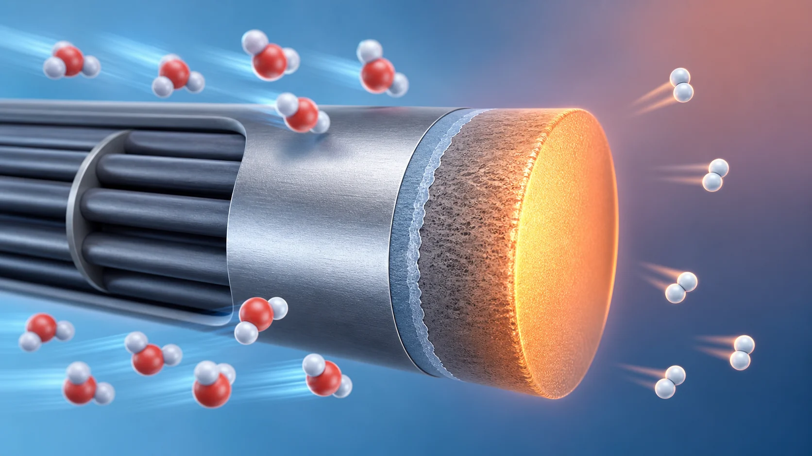
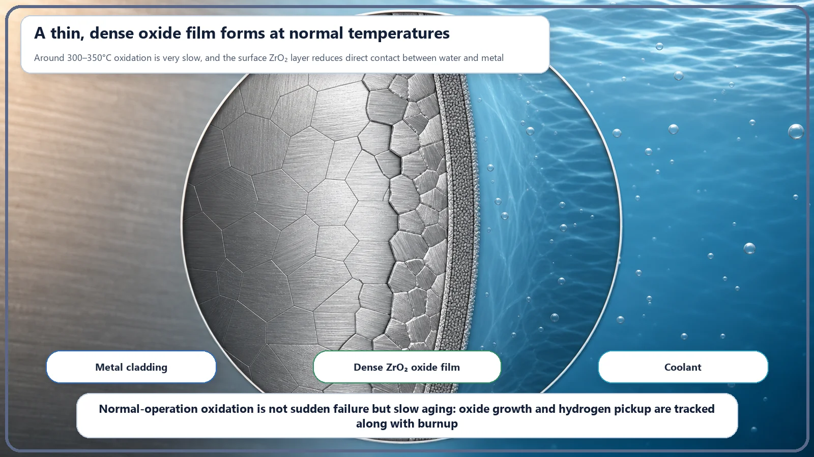
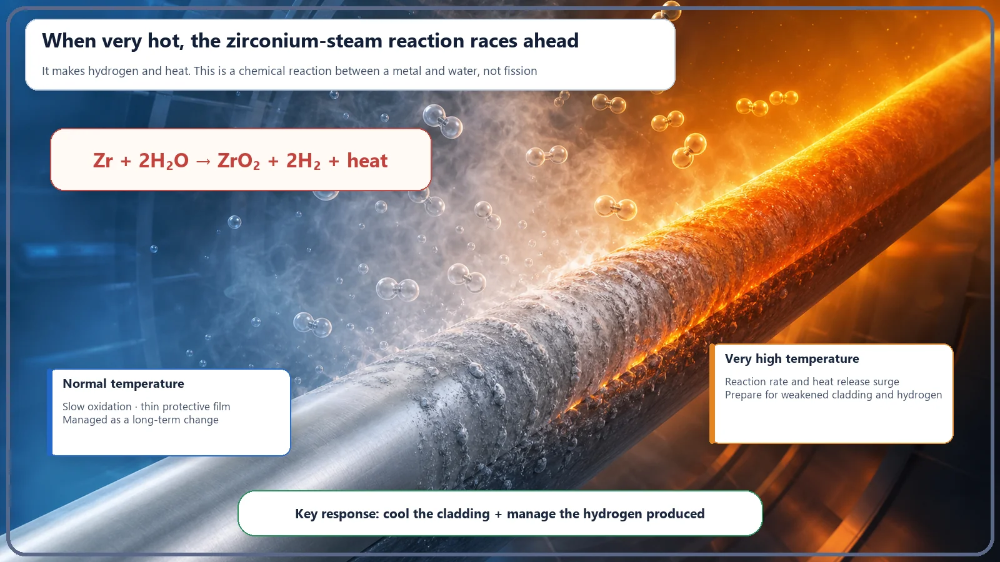

Long-Term Core Behavior & Fuel Cycle · 169
A Trusty Shield That Turns Hydrogen Maker When Hot — Cladding Oxidation and Hydrogen Generation
Like a bronze statue's patina, the oxide film on zirconium cladding normally protects the metal; at very high temperatures the same reaction turns fast and makes hydrogen.

Zirconium-alloy cladding reacts with water to form a zirconium dioxide film, releasing hydrogen at the same time: Zr + 2H₂O → ZrO₂ + 2H₂. At normal operating temperatures the reaction is very slow and the film is protective. If the cladding gets very hot in an accident, the same exothermic reaction speeds up sharply, weakening the cladding and producing large amounts of hydrogen, which plants are designed to manage.
Picture an old bronze statue in a park. Once gleaming, over the years it turns a soft blue-green. It looks ruined, but that green layer, called a patina, actually shields the metal underneath from further corrosion. It's why an old copper roof can turn green yet last for centuries: the metal forms a thin oxide layer that becomes its shield.
Something very similar happens inside a nuclear reactor, with a twist. The oxide film that normally guards the fuel like a patina changes character when the temperature gets very high, and starts producing hydrogen gas. Let's unpack cladding oxidation and hydrogen generation step by step.

The silver coat around the fuel: the cladding
Reactor fuel is made of small baked ceramic uranium pellets, stacked inside a slender metal tube sealed at both ends. That tube is called the cladding. It's a little thicker than a pencil, with a wall less than a millimeter thick. The cladding is the "first barrier" that keeps radioactive material produced by fission from leaking into the coolant (water), and also the path that carries heat from the hot fuel to the water.
It's mostly made from alloys of zirconium (Zircaloy and others). The cladding must absorb almost no neutrons, or it would interfere with the fission chain reaction, while surviving for years in high-temperature, high-pressure water with enough strength. Zirconium meets this rare combination, "lets neutrons pass and holds up in hot water," so it became the cladding material of choice long ago.
What happens when water meets metal
Oxidation shares its roots with familiar rust: a metal reacts with oxygen or water and forms an oxide on its surface. When zirconium meets water (more precisely, hot water or steam), this reaction takes place:
Zr + 2H₂O → ZrO₂ + 2H₂
On the left are zirconium (Zr) and water (H₂O); on the right, zirconium dioxide (ZrO₂, the oxide film itself) and hydrogen (H₂). As zirconium takes oxygen from water and becomes the oxide film, the hydrogen left behind breaks away as a gas. So cladding oxidation and hydrogen generation aren't two separate events; they are the front and back of a single reaction, happening together. If an oxide film has formed, hydrogen has been produced in proportion.
Normally very slow, and actually helpful
In a reactor operating normally, the cladding surface temperature is roughly around 300°C. At this temperature zirconium reacts with water very slowly. A thin, dense oxide film grows gradually on the surface, and like a statue's patina it clings firmly to the metal and works as a protective coat that guards the inside from further corrosion. Unlike iron rust, which flakes off and keeps eating inward, this film makes normal-operation oxidation a predictable "aging" that unfolds over months to years.
It isn't entirely free, though. As oxidation proceeds, the actual metal wall gets a little thinner, and part of the hydrogen produced by the reaction doesn't leave as gas but soaks into the metal (this is called hydrogen pickup, or hydriding), making the material gradually more brittle. The longer fuel stays in the core, the more oxide and absorbed hydrogen accumulate, so the degree of oxidation and hydriding is one of the limits that decide "how long the fuel can be used." So plants develop more resistant alloys, set upper limits on oxide thickness and hydrogen content, and inspect fuel regularly.

But when it gets very hot, its character changes
Now for the twist. The reaction equation is the same, but when the cladding temperature rises far beyond its normal range and gets very hot (past roughly 1,000°C and up to around 1,200°C), the reaction speeds up dramatically. Just as milk keeps for days in the fridge but spoils in a day at summer room temperature, chemical reactions accelerate sharply as temperature rises. And the zirconium-water reaction has one more property: it is an exothermic reaction that gives off heat itself.
Because the reaction releases heat, it can feed itself: as the temperature rises the reaction speeds up → more heat is released → the temperature rises further → the reaction speeds up even more. Much like a fire that, once it really catches, grows by its own heat. This self-accelerating property is the fundamental reason the zirconium-steam reaction is treated with special care at high temperatures.
When the reaction becomes this rapid, two things happen at once. One: the cladding oxidizes quickly and turns brittle, weakening its barrier function of holding in the fuel. Two: a large amount of hydrogen is produced in a short time. To stress: this does not happen in normal operation. It matters in accidents where cooling is badly degraded and the cladding overheats abnormally, an entirely different phase from everyday slow oxidation.
How is the hydrogen managed?
Hydrogen is a flammable gas. If a lot of it builds up in the reactor systems or containment during an accident, it can burn or explode. Accident reports from international bodies such as the International Atomic Energy Agency (IAEA) document cases in which this hydrogen actually became a problem. That's why nuclear plants have dedicated equipment to keep hydrogen from accumulating to dangerous concentrations.
A typical example is the hydrogen recombiner, a device that uses a catalyst to recombine stray hydrogen with oxygen, turning it back into water. Other approaches include igniters that burn hydrogen off safely in advance, and designs that fill the containment with a low-oxygen gas (nitrogen) so it can't burn in the first place. Hydrogen control systems deserve their own story; the key point here is that because cladding oxidation produces hydrogen, plants are designed to manage that hydrogen too.
A few things that are easy to confuse
First, the idea that "oxidized = about to burst." Not so. Oxidation is basically a chemical process that proceeds gradually at the surface, and in normal operation it's slow aging. Even the rapid reaction is a process in which "the barrier weakens as oxidation proceeds"; oxidation itself doesn't mean an explosion.
Second, the hydrogen actually goes two ways. Part of the hydrogen from the reaction soaks into the metal and makes the material brittle (hydriding), and the rest is released into the system as gas. Weakened material (hydrogen inside the metal) and flammable gas buildup (hydrogen that escaped) are different problems.
Finally, the most important misconception: the image that "cladding oxidation means the nuclear fuel is burning." It doesn't. The oxidation and hydrogen generation described here are a chemical reaction between zirconium metal and water, a completely different process from fission, the nuclear reaction in which uranium nuclei split.
Today's takeaways
- Zirconium-alloy cladding reacts with water to form a ZrO₂ oxide film, releasing hydrogen at the same time: Zr + 2H₂O → ZrO₂ + 2H₂.
- At normal operating temperature (about 300°C) the reaction is very slow and the film protects the metal like a patina; it is managed as slow aging.
- In accidents where the cladding gets very hot (around 1,200°C), the same exothermic reaction speeds up and self-accelerates, weakening the barrier and generating large amounts of hydrogen.
- Because hydrogen is flammable, plants have recombiners, igniters or containment inerting to manage it.
- Oxidation is not an explosion, absorbed hydrogen and released hydrogen gas are different problems, and all of this is metal-water chemistry, not fission.
Even one thin metal tube hides two faces: a dependable shield in everyday operation, and a twist at high temperature.